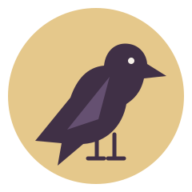

Home

Welcome to my ITIS3135 course site! I'm Neelesh Reddi, and this is where I'll share my work for Front-End Web Application Development at UNC Charlotte.
I'm taking this course to develop my web skills as part of my Software Development minor. This site will grow as I practice HTML, CSS, and JavaScript.
Start Here
Read my introduction to learn about my background, interests, and current courses. My course contract records the expectations for my work this semester.